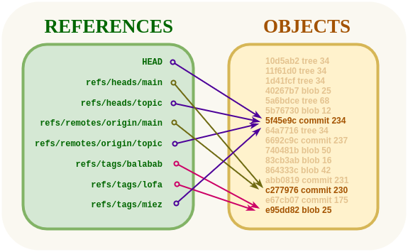

<!DOCTYPE html>
<html xmlns="http://www.w3.org/1999/xhtml" lang="" xml:lang="">
    <head>
        <meta charset="utf-8" />
        <meta name="generator" content="markdown-it" />
        <meta name="viewport" content="width=device-width, initial-scale=1.0, user-scalable=yes" />
        <meta name="author" content="runner" />
        <meta name="dcterms.date" content="2025-04-08 13:44:52.271" />
        <title>git_revisions_references</title>
        <style type="text/css">
            code {
                white-space: pre-wrap;
            }
            span.smallcaps {
                font-variant: small-caps;
            }
            span.underline {
                text-decoration: underline;
            }
            div.column {
                display: inline-block;
                vertical-align: top;
                width: 50%;
            }
        </style>
        <style type="text/css">
            a.sourceLine {
                display: inline-block;
                line-height: 1.25;
            }
            a.sourceLine {
                pointer-events: none;
                color: inherit;
                text-decoration: inherit;
            }
            a.sourceLine:empty {
                height: 1.2em;
            }
            .sourceCode {
                overflow: visible;
            }
            code.sourceCode {
                white-space: pre;
                position: relative;
            }
            div.sourceCode {
                margin: 1em 0;
            }
            pre.sourceCode {
                margin: 0;
            }
            @media screen {
                div.sourceCode {
                    overflow: auto;
                }
            }
            @media print {
                code.sourceCode {
                    white-space: pre-wrap;
                }
                a.sourceLine {
                    text-indent: -1em;
                    padding-left: 1em;
                }
            }
            pre.numberSource a.sourceLine {
                position: relative;
                left: -4em;
            }
            pre.numberSource a.sourceLine::before {
                content: attr(title);
                position: relative;
                left: -1em;
                text-align: right;
                vertical-align: baseline;
                border: none;
                pointer-events: all;
                display: inline-block;
                -webkit-touch-callout: none;
                -webkit-user-select: none;
                -khtml-user-select: none;
                -moz-user-select: none;
                -ms-user-select: none;
                user-select: none;
                padding: 0 4px;
                width: 4em;
                background-color: #ffffff;
                color: #a0a0a0;
            }
            pre.numberSource {
                margin-left: 3em;
                border-left: 1px solid #a0a0a0;
                padding-left: 4px;
            }
            div.sourceCode {
                color: #1f1c1b;
                background-color: #ffffff;
            }
            @media screen {
                a.sourceLine::before {
                    text-decoration: underline;
                }
            }
            code span {
                color: #1f1c1b;
            } /* Normal */
            code span.al {
                color: #bf0303;
                background-color: #f7e6e6;
                font-weight: bold;
            } /* Alert */
            code span.an {
                color: #ca60ca;
            } /* Annotation */
            code span.at {
                color: #0057ae;
            } /* Attribute */
            code span.bn {
                color: #b08000;
            } /* BaseN */
            code span.bu {
                color: #644a9b;
                font-weight: bold;
            } /* BuiltIn */
            code span.cf {
                color: #1f1c1b;
                font-weight: bold;
            } /* ControlFlow */
            code span.ch {
                color: #924c9d;
            } /* Char */
            code span.cn {
                color: #aa5500;
            } /* Constant */
            code span.co {
                color: #898887;
            } /* Comment */
            code span.cv {
                color: #0095ff;
            } /* CommentVar */
            code span.do {
                color: #607880;
            } /* Documentation */
            code span.dt {
                color: #0057ae;
            } /* DataType */
            code span.dv {
                color: #b08000;
            } /* DecVal */
            code span.er {
                color: #bf0303;
                text-decoration: underline;
            } /* Error */
            code span.ex {
                color: #0095ff;
                font-weight: bold;
            } /* Extension */
            code span.fl {
                color: #b08000;
            } /* Float */
            code span.fu {
                color: #644a9b;
            } /* Function */
            code span.im {
                color: #ff5500;
            } /* Import */
            code span.in {
                color: #b08000;
            } /* Information */
            code span.kw {
                color: #1f1c1b;
                font-weight: bold;
            } /* Keyword */
            code span.op {
                color: #1f1c1b;
            } /* Operator */
            code span.ot {
                color: #006e28;
            } /* Other */
            code span.pp {
                color: #006e28;
            } /* Preprocessor */
            code span.re {
                color: #0057ae;
                background-color: #e0e9f8;
            } /* RegionMarker */
            code span.sc {
                color: #3daee9;
            } /* SpecialChar */
            code span.ss {
                color: #ff5500;
            } /* SpecialString */
            code span.st {
                color: #bf0303;
            } /* String */
            code span.va {
                color: #0057ae;
            } /* Variable */
            code span.vs {
                color: #bf0303;
            } /* VerbatimString */
            code span.wa {
                color: #bf0303;
            } /* Warning */
        </style>
        <!--
  Firefox non carica font da locale quindi il font può non essere visibile
  quando di carica la pagina da locale.
  Bisogna impostare about:config
    security.fileuri.strict_origin_policy = false
  -->
        <link rel="stylesheet" href="../../inc/css/katex.min.css" />
        <link rel="stylesheet" href="../../inc/css/fonts/google_fonts.css" />
        <!-- <link href="https://cdn.jsdelivr.net/npm/bootstrap@5.3.0-alpha1/dist/css/bootstrap.min.css" rel="stylesheet" integrity="sha384-GLhlTQ8iRABdZLl6O3oVMWSktQOp6b7In1Zl3/Jr59b6EGGoI1aFkw7cmDA6j6gD" crossorigin="anonymous"> -->
        <link rel="stylesheet" href="../../inc/css/bootstrap.min.css" />
        <link rel="stylesheet" href="../../inc/css/cdp.css" />
        <!--[if lt IE 9]>
            <script src="//cdnjs.cloudflare.com/ajax/libs/html5shiv/3.7.3/html5shiv-printshiv.min.js"></script>
        <![endif]-->
        <meta name="keywords" content="Appunti,Note" />
        <meta name="description" content="Appunti di runner" />
        <link rel="icon" type="image/x-icon" href="../../inc/img/favicon.ico" />
        <link rel="shortcut icon" type="image/x-icon" href="../../inc/img/favicon.ico" />

        <link rel="stylesheet" href="../../inc/js/hljs/styles/default.css" />
        <script src="../../inc/js/hljs/lib/highlight.js"></script>
        <script src="../../inc/js/bootstrap/bootstrap.bundle.min.js"></script>
        <!-- <script src="https://cdn.jsdelivr.net/npm/bootstrap@5.3.0-alpha1/dist/js/bootstrap.bundle.min.js" integrity="sha384-w76AqPfDkMBDXo30jS1Sgez6pr3x5MlQ1ZAGC+nuZB+EYdgRZgiwxhTBTkF7CXvN" crossorigin="anonymous"></script> -->
        <script>
            hljs.initHighlightingOnLoad();
        </script>
        <script type="module">
            import mermaid from '../../inc/js/mermaid/dist/mermaid.esm.min.mjs';
            // import mermaid from 'https://cdn.jsdelivr.net/npm/mermaid@10/dist/mermaid.esm.min.mjs';
            mermaid.initialize({ startOnLoad: true });
        </script>
    </head>
    <body></body>
</html>
<h1 id="git_revisions_references" tabindex="-1">git_revisions_references <a class="header-anchor" href="#git_revisions_references" aria-hidden="true">🔗</a></h1>
<p class="code">2025-04-08 13:44:52.271</p>
<nav class="table-of-contents"><ol><li><a href="#git-references">Git References </a></li><li><a href="#git-revisions">Git Revisions </a></li><li><a href="#git-log">Git Log </a></li><li><a href="#git-tools---revision-selection">Git Tools - Revision Selection </a></li><li><a href="#references---revisions">References - Revisions </a><ol><li><a href="#short-sha-1">Short SHA-1 </a></li><li><a href="#reflog-shortnames">RefLog Shortnames </a></li><li><a href="#ancestry-references">Ancestry References </a></li></ol></li><li><a href="#git-references-(refs)">Git references (refs) </a></li><li><a href="#git-revisions-(revs)">Git revisions (revs) </a></li><li><a href="#the-connection-between-refs-and-revs">The connection between refs and revs </a></li></ol></nav><h1 id="git-references-and-revisions" tabindex="-1">Git references and revisions <a class="header-anchor" href="#git-references-and-revisions" aria-hidden="true">🔗</a></h1>
<h2 id="git-references" tabindex="-1">Git References <a class="header-anchor" href="#git-references" aria-hidden="true">🔗</a></h2>
<p>A <strong>ref</strong> is an indirect way of referring to a commit. You can think of it as a user-friendly <strong>alias</strong> for a <strong>commit hash</strong>.
Refs are stored as normal text files in the <code>.git/refs</code> directory.</p>
<p>To explore the refs in one of your repositories, navigate to <code>.git/refs</code>. You should see the following structure, but it will contain different files depending on what branches, tags, and remotes you have in your repo:</p>
<pre><code>.git/refs
    +---heads
    +---remotes
    |   \---origin
    \---tags
</code></pre>
<p>The <code>heads</code> directory defines all of the <strong>local branches</strong> in your repository.
<strong>Each filename matches the name of the corresponding branch</strong>,
and inside the file you’ll find a <strong>commit hash</strong>. This commit hash is the location of the <strong>tip of the branch</strong>.</p>
<p>The <code>tags</code> directory works the exact same way, but it contains tags instead of branches.</p>
<p>The <code>remotes</code> directory lists all remote repositories that you created with git remote as separate subdirectories.
Inside each one, you’ll find all the remote branches that have been fetched into your repository.</p>
<ul>
<li>
<p><a href="https://git-scm.com/book/it/v2/Per-Iniziare-Cos%E2%80%99%C3%A9-Git%3F">https://git-scm.com/book/it/v2/Per-Iniziare-Cos’é-Git%3F</a></p>
</li>
<li>
<p><a href="https://git-scm.com/book/sv/v2/Git-Internals-Git-References">https://git-scm.com/book/sv/v2/Git-Internals-Git-References</a></p>
</li>
<li>
<p><a href="https://git-scm.com/book/en/v2/Getting-Started-What-is-Git%3F">https://git-scm.com/book/en/v2/Getting-Started-What-is-Git%3F</a>       Snapshots</p>
</li>
<li>
<p><a href="https://git-scm.com/book/en/v2/Git-Branching-Branches-in-a-Nutshell">https://git-scm.com/book/en/v2/Git-Branching-Branches-in-a-Nutshell</a> Commit, Tree, Object</p>
</li>
<li>
<p><a href="https://git-scm.com/book/en/v2/Git-Tools-Revision-Selection">https://git-scm.com/book/en/v2/Git-Tools-Revision-Selection</a></p>
</li>
<li>
<p><a href="https://git-scm.com/book/en/v2/Git-Internals-Git-Objects">https://git-scm.com/book/en/v2/Git-Internals-Git-Objects</a></p>
</li>
<li>
<p><a href="https://git-scm.com/docs/git-update-ref">https://git-scm.com/docs/git-update-ref</a> Update the object name stored in a ref safely</p>
</li>
<li>
<p><a href="https://git-scm.com/docs/git-symbolic-ref">https://git-scm.com/docs/git-symbolic-ref</a> Read, modify and delete symbolic refs</p>
</li>
<li>
<p><a href="https://stackoverflow.com/questions/4986000/whats-the-recommended-usage-of-a-git-symbolic-reference">https://stackoverflow.com/questions/4986000/whats-the-recommended-usage-of-a-git-symbolic-reference</a></p>
</li>
<li>
<p><a href="https://stackoverflow.com/questions/73145810/how-do-git-revisions-and-references-relate-to-each-other">https://stackoverflow.com/questions/73145810/how-do-git-revisions-and-references-relate-to-each-other</a></p>
</li>
</ul>
<p><code>.git/refs</code>: I nomi dei file in <code>.git/refs</code>, che contengono gli <abbr title="Secure Hash Algorithm. L'SHA-1 (così come l'SHA-0) produce un digest di 160 bit da un messaggio con una lunghezza massima di 2^64-1 bit">SHA-1</abbr> di un commit, sono chiamati <strong>references</strong> o <strong>refs</strong>, è possibile riferirsi ai commit utilizzando i nomi di tali files come label al posto del <abbr title="Secure Hash Algorithm. L'SHA-1 (così come l'SHA-0) produce un digest di 160 bit da un messaggio con una lunghezza massima di 2^64-1 bit">SHA-1</abbr>.</p>
<pre><code class="language-bash"><span class="hljs-comment"># Esempio per creare manualmente una reference(è più sicuro che creare manualmente il file):</span>
$ git update-ref refs/heads/master 1a410efbd13591db07496601ebc7a059dd55cfe9

<span class="hljs-comment"># Assicura che l&#x27;HEAD del remote origin punti al branch main</span>
<span class="hljs-comment"># https://stackoverflow.com/questions/4986000/whats-the-recommended-usage-of-a-git-symbolic-reference</span>
$ git symbolic-ref refs/remotes/origin/HEAD refs/remotes/origin/main
$ <span class="hljs-built_in">cat</span> .git/refs/remotes/origin/HEAD
    ref: refs/remotes/origin/main
$ <span class="hljs-built_in">cat</span> .git/refs/remotes/origin/main
    c46d2f4dd56de4efbef762e82c643ea218881d69
</code></pre>
<h2 id="git-revisions" tabindex="-1">Git Revisions <a class="header-anchor" href="#git-revisions" aria-hidden="true">🔗</a></h2>
<ul>
<li>
<p><a href="https://git-scm.com/docs/gitrevisions.html#_specifying_ranges">https://git-scm.com/docs/gitrevisions.html#_specifying_ranges</a></p>
<p>A revision parameter <code>&lt;rev&gt;</code> typically, <strong>but not necessarily</strong>, names a commit object.
It uses what is called an <strong>extended <abbr title="Secure Hash Algorithm. L'SHA-1 (così come l'SHA-0) produce un digest di 160 bit da un messaggio con una lunghezza massima di 2^64-1 bit">SHA-1</abbr> syntax</strong>. There are various ways to spell object names.</p>
</li>
<li>
<p><a href="https://git-scm.com/book/en/v2/Git-Tools-Revision-Selection">https://git-scm.com/book/en/v2/Git-Tools-Revision-Selection</a></p>
<ul>
<li><a href="https://devhints.io/git-revisions">https://devhints.io/git-revisions</a></li>
</ul>
</li>
</ul>
<h2 id="git-log" tabindex="-1">Git Log <a class="header-anchor" href="#git-log" aria-hidden="true">🔗</a></h2>
<ul>
<li><a href="https://devhints.io/git-log">https://devhints.io/git-log</a></li>
<li><a href="https://devhints.io/git-log-format">https://devhints.io/git-log-format</a></li>
</ul>
<h2 id="git-tools---revision-selection" tabindex="-1">Git Tools - Revision Selection <a class="header-anchor" href="#git-tools---revision-selection" aria-hidden="true">🔗</a></h2>
<ul>
<li><a href="https://git-scm.com/book/en/v2/Git-Tools-Revision-Selection">https://git-scm.com/book/en/v2/Git-Tools-Revision-Selection</a></li>
<li><a href="https://git-scm.com/docs/git-show">https://git-scm.com/docs/git-show</a></li>
<li><a href="https://git-scm.com/docs/git-reflog">https://git-scm.com/docs/git-reflog</a></li>
<li><a href="https://git-scm.com/docs/git-rev-parse">https://git-scm.com/docs/git-rev-parse</a></li>
<li><a href="https://git-scm.com/docs/git-log#Documentation/git-log.txt--g">https://git-scm.com/docs/git-log#Documentation/git-log.txt--g</a></li>
</ul>
<pre><code class="language-bat"><span class="hljs-function">C:\&gt; <span class="hljs-title">git</span> <span class="hljs-title">log</span>
73<span class="hljs-title">c7376</span> 2024-07-30 09:56:02 +0200       <span class="hljs-title">rev</span> 2
<span class="hljs-title">d147909</span> 2024-07-30 09:55:04 +0200       <span class="hljs-title">Revision</span> <span class="hljs-title">Selection</span>
0<span class="hljs-title">a03d4c</span> 2024-07-29 15:24:24 +0200       <span class="hljs-title">Rebasing</span>
03<span class="hljs-title">fd58e</span> 2024-07-29 15:11:52 +0200       <span class="hljs-title">remote</span> <span class="hljs-title">branches</span>

:: <span class="hljs-title">Dettagli</span> <span class="hljs-title">di</span> <span class="hljs-title">un</span> <span class="hljs-title">commit</span>
:: <span class="hljs-title">Short</span> <span class="hljs-title">SHA</span>-1
<span class="hljs-title">C</span>:\&gt; <span class="hljs-title">git</span> <span class="hljs-title">show</span> 73<span class="hljs-title">c7376</span>
:: <span class="hljs-title">Il</span> <span class="hljs-title">nome</span> <span class="hljs-title">di</span> <span class="hljs-title">un</span> <span class="hljs-title">branch</span> <span class="hljs-title">indica</span> <span class="hljs-title">l</span>&#x27;<span class="hljs-title">ultimo</span> <span class="hljs-title">commit</span> <span class="hljs-title">su</span> <span class="hljs-title">quel</span> <span class="hljs-title">branch</span>
<span class="hljs-title">C</span>:\&gt; <span class="hljs-title">git</span> <span class="hljs-title">show</span> <span class="hljs-title">main</span>

:: <span class="hljs-title">Visualizzazione</span> <span class="hljs-title">del</span> <span class="hljs-title">reflog</span> (<span class="hljs-title">storico</span> <span class="hljs-title">locale</span> <span class="hljs-title">delle</span> <span class="hljs-title">posizioni</span> <span class="hljs-title">dell</span>&#x27;<span class="hljs-title">HEAD</span> <span class="hljs-title">e</span> <span class="hljs-title">dei</span> <span class="hljs-title">branch</span>)
<span class="hljs-title">C</span>:\&gt; <span class="hljs-title">git</span> <span class="hljs-title">reflog</span>
73<span class="hljs-title">c7376</span> (<span class="hljs-title">HEAD</span> -&gt; <span class="hljs-title">main</span>, <span class="hljs-title">origin</span>/<span class="hljs-title">main</span>, <span class="hljs-title">origin</span>/<span class="hljs-title">HEAD</span>) <span class="hljs-title">HEAD</span>@{0}: <span class="hljs-title">commit</span>: <span class="hljs-title">rev</span> 2
<span class="hljs-title">d147909</span> <span class="hljs-title">HEAD</span>@{1}: <span class="hljs-title">commit</span>: <span class="hljs-title">Revision</span> <span class="hljs-title">Selection</span>
0<span class="hljs-title">a03d4c</span> <span class="hljs-title">HEAD</span>@{2}: <span class="hljs-title">commit</span>: <span class="hljs-title">Rebasing</span>
03<span class="hljs-title">fd58e</span> <span class="hljs-title">HEAD</span>@{3}: <span class="hljs-title">commit</span>: <span class="hljs-title">remote</span> <span class="hljs-title">branches</span>
:: <span class="hljs-title">Dettagli</span> <span class="hljs-title">di</span> <span class="hljs-title">un</span> <span class="hljs-title">commit</span> <span class="hljs-title">riferito</span> <span class="hljs-title">come</span> <span class="hljs-title">posizione</span> <span class="hljs-title">nel</span> <span class="hljs-title">reflog</span>
<span class="hljs-title">C</span>:\&gt; <span class="hljs-title">git</span> <span class="hljs-title">show</span> <span class="hljs-title">HEAD</span>@{2}

:: <span class="hljs-title">Altro</span> <span class="hljs-title">modo</span> <span class="hljs-title">per</span> <span class="hljs-title">vedere</span> <span class="hljs-title">i</span> <span class="hljs-title">reflog</span> <span class="hljs-title">shortnames</span>
<span class="hljs-title">C</span>:\&gt; <span class="hljs-title">git</span> <span class="hljs-title">log</span> --<span class="hljs-title">oneline</span> -<span class="hljs-title">g</span> <span class="hljs-title">main</span> 
73<span class="hljs-title">c7376</span> (<span class="hljs-title">HEAD</span> -&gt; <span class="hljs-title">main</span>, <span class="hljs-title">origin</span>/<span class="hljs-title">main</span>, <span class="hljs-title">origin</span>/<span class="hljs-title">HEAD</span>) <span class="hljs-title">main</span>@{0}: <span class="hljs-title">commit</span>: <span class="hljs-title">rev</span> 2
<span class="hljs-title">q</span> <span class="hljs-title">main</span>@{1}: <span class="hljs-title">commit</span>: <span class="hljs-title">Revision</span> <span class="hljs-title">Selection</span>
0<span class="hljs-title">a03d4c</span> <span class="hljs-title">main</span>@{2}: <span class="hljs-title">commit</span>: <span class="hljs-title">Rebasing</span>
03<span class="hljs-title">fd58e</span> <span class="hljs-title">main</span>@{3}: <span class="hljs-title">commit</span>: <span class="hljs-title">remote</span> <span class="hljs-title">branches</span>
</span></code></pre>
<p>Un merge commit può avere più di un parent, il secondo parent sarebbe <code>HEAD^2</code>,<br>
mentre il primo parent si indica con <code>HEAD^1</code> oppure <code>HEAD^</code></p>
<pre><code class="language-bat">:: Parent of the HEAD
<span class="hljs-function">C:\&gt; <span class="hljs-title">git</span> <span class="hljs-title">show</span> &quot;<span class="hljs-title">HEAD</span>^&quot;
:: <span class="hljs-title">Oppure</span>
<span class="hljs-title">C</span>:\&gt; <span class="hljs-title">git</span> <span class="hljs-title">show</span> &quot;<span class="hljs-title">HEAD</span>^1&quot;
<span class="hljs-title">d147909</span> 2024-07-30 09:55:04 +0200       <span class="hljs-title">Revision</span> <span class="hljs-title">Selection</span>

:: <span class="hljs-title">Primo</span> <span class="hljs-title">parent</span>:
<span class="hljs-title">C</span>:\&gt; <span class="hljs-title">git</span> <span class="hljs-title">show</span> &quot;<span class="hljs-title">d147909</span>^&quot;
0<span class="hljs-title">a03d4c</span> 2024-07-29 15:24:24 +0200       <span class="hljs-title">Rebasing</span>
:: <span class="hljs-title">Secondo</span> <span class="hljs-title">Ancestor</span>:
<span class="hljs-title">C</span>:\&gt; <span class="hljs-title">git</span> <span class="hljs-title">show</span> &quot;<span class="hljs-title">d147909</span>~2&quot;
03<span class="hljs-title">fd58e</span> 2024-07-29 15:11:52 +0200       <span class="hljs-title">remote</span> <span class="hljs-title">branches</span>
</span></code></pre>
<p>Windows: <strong>Escaping the caret on Windows</strong></p>
<p>On Windows in <code>cmd.exe</code>, <strong><code>^</code></strong> is a special character and needs to be treated differently.
You can either <strong>double</strong> it or put the commit reference in <strong>quotes</strong>:</p>
<pre><code class="language-bash">git show HEAD^        <span class="hljs-comment"># will NOT work on Windows</span>
</code></pre>
<pre><code class="language-bat"><span class="hljs-function">C:\&gt; <span class="hljs-title">git</span> <span class="hljs-title">show</span> <span class="hljs-title">HEAD</span>^^    :: <span class="hljs-title">OK</span>
<span class="hljs-title">C</span>:\&gt; <span class="hljs-title">git</span> <span class="hljs-title">show</span> &quot;<span class="hljs-title">HEAD</span>^&quot;   :: <span class="hljs-title">OK</span>
</span></code></pre>
<pre><code class="language-bash"><span class="hljs-comment"># Visualizza i commit locali da inviare al repository</span>
$ git <span class="hljs-built_in">log</span> origin/main..HEAD
<span class="hljs-comment"># Oppure anche semplicemente</span>
$ git <span class="hljs-built_in">log</span> origin/main..

</code></pre>
<h2 id="references---revisions" tabindex="-1">References - Revisions <a class="header-anchor" href="#references---revisions" aria-hidden="true">🔗</a></h2>
<ul>
<li><a href="https://git-scm.com/book/it/v2/Git-Internals-Git-References">https://git-scm.com/book/it/v2/Git-Internals-Git-References</a></li>
<li><a href="https://www.atlassian.com/git/tutorials/refs-and-the-reflog">https://www.atlassian.com/git/tutorials/refs-and-the-reflog</a></li>
</ul>
<p><strong>Una reference è un alias utile per dare ad un commit un nome di comodo da usare al posto dell'hash <abbr title="Secure Hash Algorithm. L'SHA-1 (così come l'SHA-0) produce un digest di 160 bit da un messaggio con una lunghezza massima di 2^64-1 bit">SHA-1</abbr>.</strong></p>
<p><code>HEAD</code> – The currently checked-out commit/branch.<br>
The <code>HEAD</code> file is a symbolic reference to the branch you’re currently on.</p>
<p>per avere l'ultimo commit del branch 1.5 in formato <abbr title="Secure Hash Algorithm. L'SHA-1 (così come l'SHA-0) produce un digest di 160 bit da un messaggio con una lunghezza massima di 2^64-1 bit">SHA-1</abbr></p>
<pre><code class="language-bash">$ <span class="hljs-built_in">cat</span> .git/HEAD
ref: refs/heads/main

$ git rev-parse 1.5
094acde257f5968b254ce7e4880010f1adddd9a6
$ git rev-parse --short  1.5
094acde

$ find .git/refs
.git/refs
.git/refs/heads         <span class="hljs-comment"># la directory heads contiene i puntatori agli ultimi commit dei rispettivi rami locali</span>
.git/refs/tags
</code></pre>
<p><strong>Revisions</strong>:</p>
<ul>
<li>
<p><a href="https://git-scm.com/docs/gitrevisions">https://git-scm.com/docs/gitrevisions</a></p>
</li>
<li>
<p><a href="https://git-scm.com/book/en/v2/Git-Tools-Revision-Selection">https://git-scm.com/book/en/v2/Git-Tools-Revision-Selection</a></p>
<pre><code class="language-bash">man gitrevisions
man git-rev-parse
git rev-parse --<span class="hljs-built_in">help</span> <span class="hljs-comment"># spiegazione del caret ^ per indicare il commit parent</span>
</code></pre>
</li>
</ul>
<h3 id="short-sha-1" tabindex="-1">Short <abbr title="Secure Hash Algorithm. L'SHA-1 (così come l'SHA-0) produce un digest di 160 bit da un messaggio con una lunghezza massima di 2^64-1 bit">SHA-1</abbr> <a class="header-anchor" href="#short-sha-1" aria-hidden="true">🔗</a></h3>
<p>Git può riferire i commit utilizzando i primi caratteri dell'hash <abbr title="Secure Hash Algorithm. L'SHA-1 (così come l'SHA-0) produce un digest di 160 bit da un messaggio con una lunghezza massima di 2^64-1 bit">SHA-1</abbr>:</p>
<pre><code class="language-bash">$ git <span class="hljs-built_in">log</span>
commit 734713bc047d87bf7eac9674765ae793478c50d3
$ git show 1c002d
</code></pre>
<h3 id="reflog-shortnames" tabindex="-1">RefLog Shortnames <a class="header-anchor" href="#reflog-shortnames" aria-hidden="true">🔗</a></h3>
<p>Attenzione, il reflog è solo locale. Utile per fare un soft reset ed accorpare o eliminare commit.</p>
<pre><code class="language-bash">// @ per riferirsi ai commit locali precedenti
$ git reflog
734713b HEAD@{0}: commit: Fix refs handling, add gc auto, update tests
d921970 HEAD@{1}: merge phedders/rdocs: Merge made by the <span class="hljs-string">&#x27;recursive&#x27;</span> strategy.
1c002dd HEAD@{2}: commit: Add some blame and merge stuff
1c36188 HEAD@{3}: rebase -i (squash): updating HEAD
95df984 HEAD@{4}: commit: <span class="hljs-comment"># This is a combination of two commits.</span>
1c36188 HEAD@{5}: rebase -i (squash): updating HEAD
7e05da5 HEAD@{6}: rebase -i (pick): updating HEAD
$ git show HEAD@{5}
$ git <span class="hljs-built_in">log</span> -g <span class="hljs-comment"># serve -g per avere i reflog nel log</span>
</code></pre>
<h3 id="ancestry-references" tabindex="-1">Ancestry References <a class="header-anchor" href="#ancestry-references" aria-hidden="true">🔗</a></h3>
<p>Ci si può riferire ai commit anche attraverso la loro struttura di ereditarietà.</p>
<p><code>HEAD~</code> commit precedente</p>
<pre><code class="language-bash">$ git <span class="hljs-built_in">log</span> --pretty=format:<span class="hljs-string">&quot;%h %s&quot;</span> --graph
$ git show HEAD^ <span class="hljs-comment"># ^ identifica quale parent si vuole tra quelli disponibili del primo livello gerarchico superiore</span>
                 <span class="hljs-comment"># ~ identifica quale antenato si vuole, risalendo nella gerarchia prende sempre solo il primo parent</span>
</code></pre>
<p>Con <code>~&lt;n&gt;</code> si indica l'ennesimo antenato del commit.
Con <code>^&lt;n&gt;</code> si indica l'ennesimo padre del commit.</p>
<pre><code>G   H   I   J
 \ /     \ /
  D   E   F
   \  |  / \
    \ | /   |
     \|/    |
      B     C
       \   /
        \ /
         A

A =      = A^0
B = A^   = A^1     = A~1
C =      = A^2
D = A^^  = A^1^1   = A~2
E = B^2  = A^^2
F = B^3  = A^^3
G = A^^^ = A^1^1^1 = A~3
H = D^2  = B^^2    = A^^^2  = A~2^2
I = F^   = B^3^    = A^^3^
J = F^2  = B^3^2   = A^^3^2
</code></pre>
<p>A <code>Git reference</code> (i.e., the alternative name of a <code>Git object</code>) can be a <code>Git revision</code> (i.e., a <code>Git object query</code>)<a href="#example-1"><sup>example-1</sup></a>, but not vice versa <a href="#example-2"><sup>example-2</sup></a> because:</p>
<ul>
<li>(MANY-TO-ONE) A <code>ref</code> can only stand for a single <code>Git object</code>, but each <code>Git object</code> can have many <code>ref</code>s.</li>
<li>(ONE-TO-MANY) A <code>rev</code> can resolve to one or more <code>Git objects</code>.</li>
</ul>
<p><a name="example-1"></a>
[example-1]:</p>
<pre><code class="language-bash">git <span class="hljs-built_in">log</span> main
</code></pre>
<p><a name="example-2"></a>
[example-2]:</p>
<pre><code class="language-bash">git <span class="hljs-built_in">log</span> main..topic <span class="hljs-comment"># (even though the revision main..topic uses two references, main and topic).</span>
</code></pre>
<h2 id="git-references-(refs)" tabindex="-1">Git references (refs) <a class="header-anchor" href="#git-references-(refs)" aria-hidden="true">🔗</a></h2>
<p><strong>Many-to-one</strong> relationship between:</p>
<pre><code class="language-text">┌─────────┐             ┌──────┐
│  Git    │ *         1 │  Git │
│reference├────────────►│object│
└─────────┘             └──────┘
</code></pre>
<p><code>Git reference</code> points to a singular <code>Git object</code>, and multiple <code>Git references</code> can point to the same <code>Git object</code>.</p>
<p>To elabor the point:</p>
<ul>
<li>A <a href="https://git-scm.com/book/sv/v2/Git-Internals-Git-References">Git reference</a> is an alternative designation<sup class="footnote-ref"><a href="#fn1" id="fnref1">[1]</a></sup> of a particular Git object<sup class="footnote-ref"><a href="#fn2" id="fnref2">[2]</a></sup>.</li>
<li>When a <a href="https://git-scm.com/book/sv/v2/Git-Internals-Git-References">Git reference</a> is de-referenced (or resolved), the result is one [<abbr title="Secure Hash Algorithm. L'SHA-1 (così come l'SHA-0) produce un digest di 160 bit da un messaggio con una lunghezza massima di 2^64-1 bit">SHA-1</abbr> object name (40-byte hexadecimal string)](<a href="https://git-scm.com/docs/gitrevisions.html#:%7E:text=SHA%2D1%20object%20name%20(40%2Dbyte%20hexadecimal%20string)">https://git-scm.com/docs/gitrevisions.html#:~:text=<abbr title="Secure Hash Algorithm. L'SHA-1 (così come l'SHA-0) produce un digest di 160 bit da un messaggio con una lunghezza massima di 2^64-1 bit">SHA-1</abbr> object name (40-byte hexadecimal string)</a>  <sup class="footnote-ref"><a href="#fn3" id="fnref3">[3]</a></sup> identifying a <a href="https://git-scm.com/book/en/v2/Git-Internals-Git-Objects">Git object</a> in the object database.</li>
<li><a href="https://git-scm.com/book/sv/v2/Git-Internals-Git-References">Git reference</a>s and Git objects<sup class="footnote-ref"><a href="#fn2" id="fnref2:1">[2:1]</a></sup> are in a <strong>many-to-one</strong> relationship: many references can point to the same object, but a reference can only point a single object at any given time.</li>
</ul>
<p>For example:</p>
<pre><code class="language-sh">[~/my-project]$ git cat-file --batch-check --batch-all-objects
10d5ab2b502faadff680c6904cbd60d7a8b5d0af tree 34
11f61d01b7af5c657c13109777a577ef6a3d3a7a tree 34
1d41fcffd528c1ee950b630d939407fe5f3b22d0 tree 34
40267b7fcf0d4490a45e0d70618a5d7b63895a60 blob 25
5a6bdceda9ae20b80fed214776b4423f522f2d01 tree 68
5b76730490981c045b186fd9651f91f0492c5b07 blob 12
5f45e9c854941c72deb9d36fb3e95e4feb4d698f commit 234
64a77169fe44d06b082cbe52478b3539cb333d45 tree 34
6692c9c6e231b1dfd5594dd59b32001b70060f19 commit 237
740481b1d3ce7de99ed26f7db6687f83ee221d67 blob 50
83cb3ab54ca122d439bdd9997a21f399cac69692 blob 16
864333c0eccabdaba6df27166ac616c922569b47 blob 42
abb08192ed875ef73fa66029994aa2f6700befd0 commit 231
c277976fce0b2b32b954a66d4345730b5b08f1db commit 230
e67cb07f9ddb0ecd0f88fcf36093d8d8bf928b75 commit 175
e95dd8284a84af5418c0dcf9cbdc0b1061624907 blob 25

[~/my-project]$ git show-ref --<span class="hljs-built_in">head</span> --dereference
5f45e9c854941c72deb9d36fb3e95e4feb4d698f HEAD
c277976fce0b2b32b954a66d4345730b5b08f1db refs/heads/main
5f45e9c854941c72deb9d36fb3e95e4feb4d698f refs/heads/topic
c277976fce0b2b32b954a66d4345730b5b08f1db refs/remotes/origin/main
5f45e9c854941c72deb9d36fb3e95e4feb4d698f refs/remotes/origin/topic
e95dd8284a84af5418c0dcf9cbdc0b1061624907 refs/tags/balabab
e95dd8284a84af5418c0dcf9cbdc0b1061624907 refs/tags/lofa
5f45e9c854941c72deb9d36fb3e95e4feb4d698f refs/tags/miez
</code></pre>
<p></p>
<h2 id="git-revisions-(revs)" tabindex="-1">Git revisions (revs) <a class="header-anchor" href="#git-revisions-(revs)" aria-hidden="true">🔗</a></h2>
<p><strong>One-to-many</strong> relationship between:</p>
<pre><code class="language-text">┌────────┐              ┌──────┐
│  Git   │ 1          * │  Git │
│revision├──────────────┤object│
└────────┘              └──────┘
</code></pre>
<p>A <code>Git revision</code> is a <code>Git object query</code> that resolves to one or more <code>Git objects</code>.</p>
<p>A Git revision is a string of characters conforming to a <a href="https://git-scm.com/docs/gitrevisions.html">special notation syntax</a> - or <a href="https://git-scm.com/book/en/v2/Git-Tools-Revision-Selection#:%7E:text=This%20makes%20for%20a%20very%20powerful%20revision%20query%20system%20that%20should%20help%20you%20figure%20out%20what%20is%20in%20your%20branches">&quot;revision query system&quot;</a> - that are used to unambiguously select one or more Git objects<sup class="footnote-ref"><a href="#fn2" id="fnref2:2">[2:2]</a></sup>.</p>
<p>This is akin how database systems (e.g., PostgreSQL) use a query language (e.g., SQL), but in this case Git is the database system and the revision syntax is the query language. The analogy seems apt to the extent to revisions being <a href="https://git-scm.com/docs/gitrevisions.html#_specifying_ranges">able to refer to a range of Git objects</a> too.</p>
<p>For example, given this commit history,</p>
<pre><code class="language-sh">* ebc9079 (HEAD -&gt; main) karikittyom
* 982b806 edes
* ccccccc tyukom
* bbbbbbb megis van
* aaaaaaa egy felpenzem
</code></pre>
<p>the revision <code>aaaaaaa..ccccccc</code> will return commits <code>bbbbbbb</code> and <code>ccccccc</code>:</p>
<pre><code class="language-bash">$ git <span class="hljs-built_in">log</span> aaaaaaa..ccccccc

commit cccccccccccccccccccccccccccccccccccccccc
Author: toraritte
Date:   Mon Jan 9 03:29:24 2023 +0000

    tyukom

commit bbbbbbbbbbbbbbbbbbbbbbbbbbbbbbbbbbbbbbbb
Author: toraritte
Date:   Mon Jan 9 03:29:24 2023 +0000

    megis van  
</code></pre>
<h2 id="the-connection-between-refs-and-revs" tabindex="-1">The connection between refs and revs <a class="header-anchor" href="#the-connection-between-refs-and-revs" aria-hidden="true">🔗</a></h2>
<p>Git <strong>references</strong> are simply labels for specific Git objects, but there are plenty of times when one would like to carry out operations on other objects as well. The only way to do it without revisions is to manually find them and then list all the <abbr title="Secure Hash Algorithm. L'SHA-1 (così come l'SHA-0) produce un digest di 160 bit da un messaggio con una lunghezza massima di 2^64-1 bit">SHA-1</abbr> hashes of the Git objects involved.</p>
<p>The <strong>revision</strong> notation is a query system to reach any Git object (or a range of them) in a repo by traversing the directed acyclic graph or DAG.</p>
<p>The fundamental building blocks of relative<sup class="footnote-ref"><a href="#fn4" id="fnref4">[4]</a></sup> <strong>revision queries</strong> are:</p>
<ul>
<li><a href="https://git-scm.com/docs/gitrevisions.html#Documentation/gitrevisions.txt-emltsha1gtemegemdae86e1950b1277e545cee180551750029cfe735ememdae86eem">extended <abbr title="Secure Hash Algorithm. L'SHA-1 (così come l'SHA-0) produce un digest di 160 bit da un messaggio con una lunghezza massima di 2^64-1 bit">SHA-1</abbr> syntax</a> (e.g., <code>&lt;sha1&gt;</code>, e.g. <code>dae86e1950b1277e545cee180551750029cfe735</code>, <code>dae86e</code>)</li>
<li><a href="https://git-scm.com/book/sv/v2/Git-Internals-Git-References">Git references</a> (which ultimately resolve to <code>&lt;sha1&gt;</code>)</li>
</ul>
<p>where <strong>references</strong> serve as starting points to begin traversing the graph.</p>
<p>At least, every notation from the <a href="https://git-scm.com/docs/gitrevisions.html">gitrevisions</a> docs boil down to the above conclusion:</p>
<ul>
<li><code>&lt;describeOutput&gt;</code>, e.g. <code>v1.7.4.2-679-g3bee7fb</code> <a href="https://git-scm.com/docs/git-describe"><code>git describe</code></a> &quot;finds the most recent tag that is reachable from a commit&quot;. Tags are Git references, and <code>git describe</code> already has its own revision-esque notation for its results.</li>
<li><code>[&lt;branchname&gt;]@{upstream}</code>, e.g. <code>master@{upstream}</code>, <code>@{u}</code> Branch names are <a href="https://git-scm.com/book/sv/v2/Git-Internals-Git-References#:%7E:text=That%E2%80%99s%20basically%20what%20a%20branch%20in%20Git%20is%3A%20a%20simple%20pointer%20or%20reference%20to%20the%20head%20of%20a%20line%20of%20work">Git references</a>, and the rest is the revision query notation.</li>
<li><code>&lt;rev&gt;^{&lt;type&gt;}</code>, e.g. <code>v0.99.8^{commit}</code> Where <code>&lt;rev&gt;</code> means to <a href="https://git-scm.com/docs/gitrevisions.html#:%7E:text=dereference%20the%20object%20at%20%3Crev%3E%20recursively">&quot;dereference the object at recursively&quot;</a>, so in the end we'll get to a tag or <code>&lt;sha1&gt;</code>.</li>
</ul>
<hr class="footnotes-sep">
<section class="footnotes">
<ol class="footnotes-list">
<li id="fn1" class="footnote-item"><p>Or &quot;alias&quot;, &quot;pointer&quot;, &quot;label&quot;, etc. <a href="#fnref1" class="footnote-backref">↩︎</a></p>
</li>
<li id="fn2" class="footnote-item"><p>There are 4 Git object types: <a href="https://git-scm.com/book/en/v2/Git-Internals-Git-Objects">tree, blob, commit</a>, and <a href="https://git-scm.com/book/sv/v2/Git-Internals-Git-References#_tags">tag</a>. <a href="#fnref2" class="footnote-backref">↩︎</a> <a href="#fnref2:1" class="footnote-backref">↩︎</a> <a href="#fnref2:2" class="footnote-backref">↩︎</a></p>
</li>
<li id="fn3" class="footnote-item"><p><a href="https://git-scm.com/docs/hash-function-transition/">For now</a>, at least. <a href="#fnref3" class="footnote-backref">↩︎</a></p>
</li>
<li id="fn4" class="footnote-item"><p>The use of &quot;relative&quot; is important here, because there are also <a href="https://git-scm.com/docs/gitrevisions.html#Documentation/gitrevisions.txt-emlttextgtemegemfixnastybugem"><code>:/&lt;text&gt;</code></a> and <a href="https://git-scm.com/docs/gitrevisions.html#Documentation/gitrevisions.txt-emltngtltpathgtemegem0READMEememREADMEem"><code>:\[&lt;n&gt;:\]&lt;path&gt;</code></a> that require no anchor. <a href="#fnref4" class="footnote-backref">↩︎</a></p>
</li>
</ol>
</section>
</body></html>